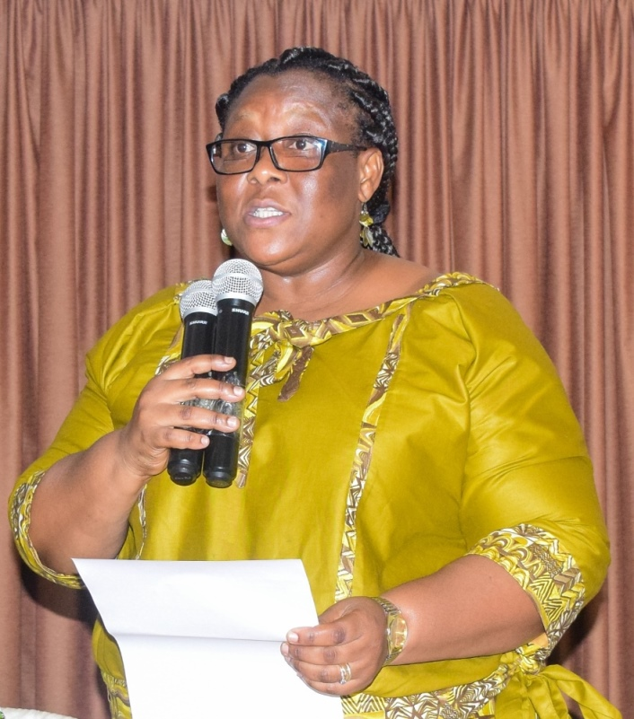
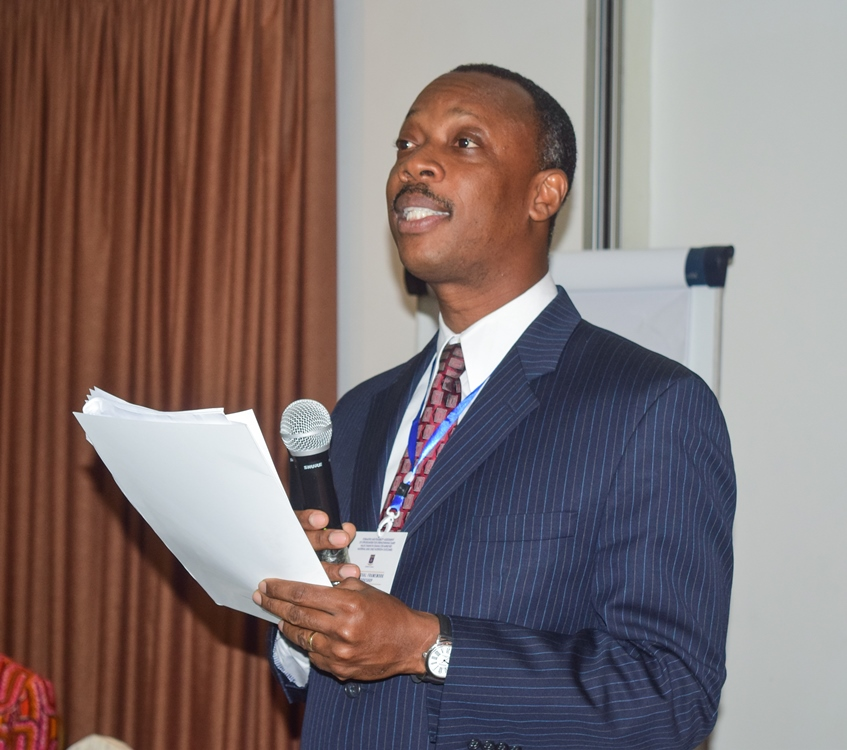
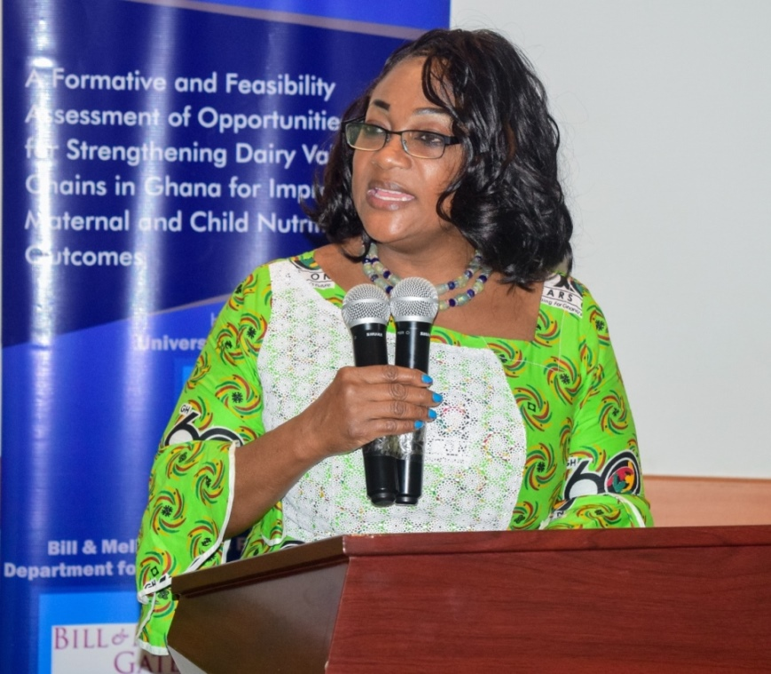
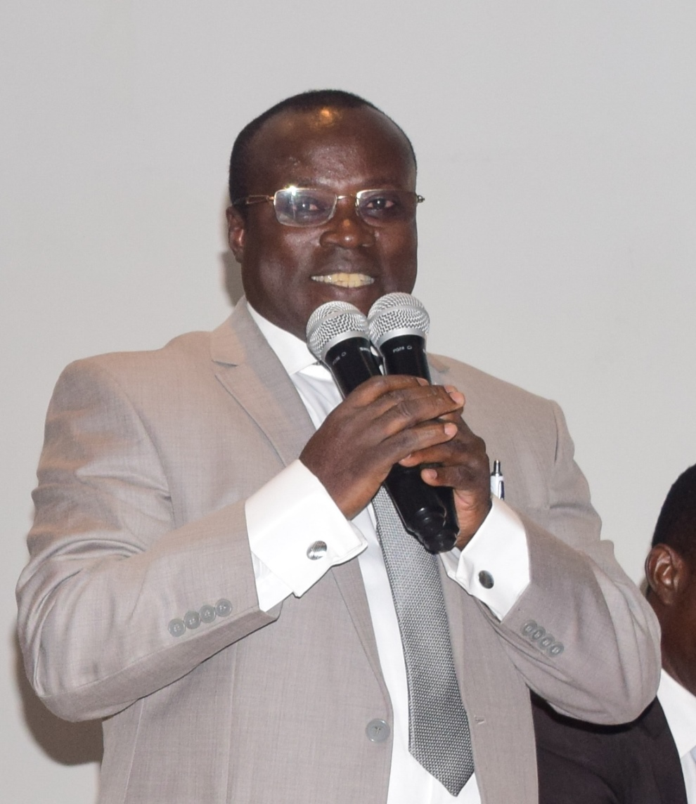

CONCEPTUAL FRAMEWORK WORKSHOP
REPORT ON THE SEMINAR ON "CONCEPTUAL FRAMEWORK WORKSHOP"
On 31st July 2017, a conceptual framework workshop on the “formative and feasibility assessment of opportunities for strengthening dairy value chains in Ghana for improved maternal and child nutrition outcomes” was held at the Fiesta Royale Hotel. This project was jointly funded by Bill & Melinda Gates Foundation (BMGF) and the Department for International Development (DFID). The aim of the workshop was to present the research findings to participants and to solicit their views on improving the conceptual framework.
The main objective of the study was to explore the barriers and facilitators to dairy consumption among women of reproductive age and children under age five. The study employed a mixed method, cross-sectional approach to collect and analyze data. Surveys, focus group discussions, microbiological analysis of local milk products, preference mapping value chain mapping and key informant interviews were the main tools used to gather data.
Chairman’s Remarks
Professor John Ofosu Anim welcomed guests on behalf of the Provost of the College of Basic and Applied Sciences (Professor Daniel Asiedu). He acknowledged the fact that animal source foods such as milk and dairy products are very important in human nutrition and are a good source of protein and micronutrients such as calcium, vitamin A and the B vitamins. He however stated that, data from the Ghana Demographics and Health survey in 2009 and 2015 has indicated that, the consumption of milk and dairy products is low amongst women of reproductive age and young children under the age of five(5), who are at risk of malnutrition and could benefit from increased consumption of milk and dairy products.

Prof. John Ofosu Anim, Chairman for the seminar
Welcome Address by Dr. Cynthia Gadegbeku
Dr. Cynthia Gadegbeku, representative of the Head of Department for Family and Consumer Sciences, welcomed participants to the workshop on behalf of the Departments of Family and Consumer Sciences and Nutrition and Food Science of the University of Ghana. She stated that, she hoped the workshop will stimulate interactions and discussions on the existing barriers and facilitators of milk and dairy products consumption among women of reproductive age and children under five years in Ghana. She reiterated the fact thatconsumption of milk and animal source foods has important benefits for the health and nutritional status of consumers.

Dr. Cynthia Gadegbeku, representative of the Head of Department for Family and Consumer Sciences
Background of the Bill and Melinda Gates(BMG) study by Dr. Nii Lante Amissah
Dr. Nii Lante Amissah of the Department of Family and Consumer Sciences, who is also the Principal Investigator briefed participants on the background of the research and introduced the project team and support staff to participants. He said the dairy for improved maternal and child nutrition is a formative and feasibility study aimed at determining barriers and the facilitators to the consumption of milk and dairy products in women of reproductive age (15-49 years)and children under the age of five years. He indicated that, the project was funded by Bill and Melinda Gates Foundation and the Department for International Development (DFID). He added that, the purpose of the workshop was to present the findings of the study and to obtain feedback from participants in order to ensure the right interpretations were made from the data collected.

Dr. Nii Lante Amissah of the Department of Family and Consumer Sciences
Keynote Address by Hon. Otiko Afisah Djaba
The Minister for Gender, Children and Social Protection, Honourable Otiko Afisah Djaba, delivered the keynote address. She indicated that, Ghana had been battling with malnutrition for years as UNICEF estimates that 1 out of every 5 children in Ghana has stunted growth due to chronic malnutrition, and the Northern Region had the highest prevalence rate of 37%. She commended academia and the non-governmental organizations funding the study for showing interest in addressing malnutrition in the country. She stated that,the low levels of dairy consumption has somehow gotten lost as we battle to bring solutions the malnutrition problem in Ghana. Some dairy products like cheese and butter, she stated, are strange to many rural areas in Ghana. She went on to say that, the summary of the study results paints a worrying picture about dairy nutrition amongst these vulnerable groups (Women of reproductive age and children under 5) in Ghana.She urged academia to consider expanding dairy consumption through the “one district, one factory” project championed by the government, to provide fresh milk to every Ghanaian child.
Honourable Otiko Djaba highlighted key challenges to dairy consumption in Ghana. She stated accessibility, affordability, lack of education about the benefits of milk and dairy products and traditional barriers as key challenges to dairy consumption especially in rural communities. She expressed the need to identify ways to make dairy consumption practical and stated that, more sensitization was needed to encourage women to consume dairy. She stated that, one of the ways of ways of encouraging dairy consumption was to improve the livelihood of women especially those in the dairy value chain. Honourable Otiko Djaba hinted that, in terms of increasing the productive capacity of women and improving their livelihoods, her Ministry was embarking on a project dubbed LEAP 1000 aimed at increasing the productive inclusion of current beneficiaries of the project the LEAP project. The project according to her will provide training and start-up capital to beneficiaries and would be expanded across the country to achieve the sustainable development goals. She added that, her Ministry was putting plans in place to provide capital and strategic partnerships to those who already have small businesses. She further added that, regarding the school feeding program, the government was aiming to purchase foodstuff from farmers in order to boost the local economy, this might lead to school children enjoying a glass of milk a day and a bottle of milk at the doorstep of every child.
She concluded by calling on Bill and Melinda Gates Foundation and the University of Ghana to strengthen cattle rearing and dairy production to increase income generation for women,this she said, will help them afford dairy and other nutritious foods leading to improved health for both mother and child.

Hon. Otiko Afisah Djaba, Minister for Gender, Children and Social Protection
Goodwill Message by Honourable Kingsley Aboagye Gyedu-Deputy Minister of Health
The goodwill message was presented by Honourable Aboagye Gyedu, the Deputy Minister for Health. He stated that, the partnership between academia and policymakers is indicative of the fact that Ghana was on the path to real development. He indicated that, statistics indicate that every fifteen minutes a mother or child dies due to malnutrition especially in poor communities. He added that the project was targeted at the right groups and the onus lied on all Ghanaians to save the lives of women and children.

Hon. Aboagye Gyedu, Deputy Minister for Health
The chairperson in his closing remarks stated that years ago, there was a problem with the consumption of fruits and vegetables around the world and there had been a headway with this problem, he stated that now the problem was with the consumption of milk and dairy products in Ghana, and he believed the study would improve nutrition of women of reproductive age and children under 5. He advised that, findings of the study should not be confined to the walls of academia, journals or books, but the information should be made available to stakeholders to improve nutrition in rural communities. He called on the researchers to partner with the Ministry of Gender, Children and Social Protection to work with“Kayayei” to make use of dairy production and processing to improve their livelihood and nutrition. He emphasized the fact that, information obtained from the study should help people by making it accessible to relevant parties. He concluded by stating that people should consume dairy products as they consume vegetables. “We are what we eat”, he remarked.
He then declared the workshop duly opened.
The findings revealed there is low consumption of dairy among women of reproductive age and children under age five. It further revealed majority of respondents are not meeting the acceptable intake of some key nutrients. Women were also found to play a significant role in dairy processing while men played a major role in dairy production. Women and children were found to like milk products that were sweet and flavored. The bacteria E.Coli was found to be present in most dairy products. Key facilitators to dairy consumption included; availability, education on benefits of milk, satiation, access, lower prices and smaller packaged products while major barriers included; prior experience with milk, high cost, inconsistent information about benefits, unattractive packaging, perception of fat content and non-satiating nature of milk.
The study recommended an increased research into milk and other dairy products, expansion of the dairy industry and education on the benefits of consuming dairy.